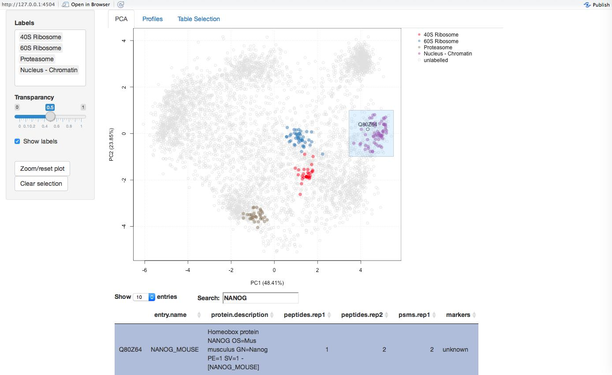
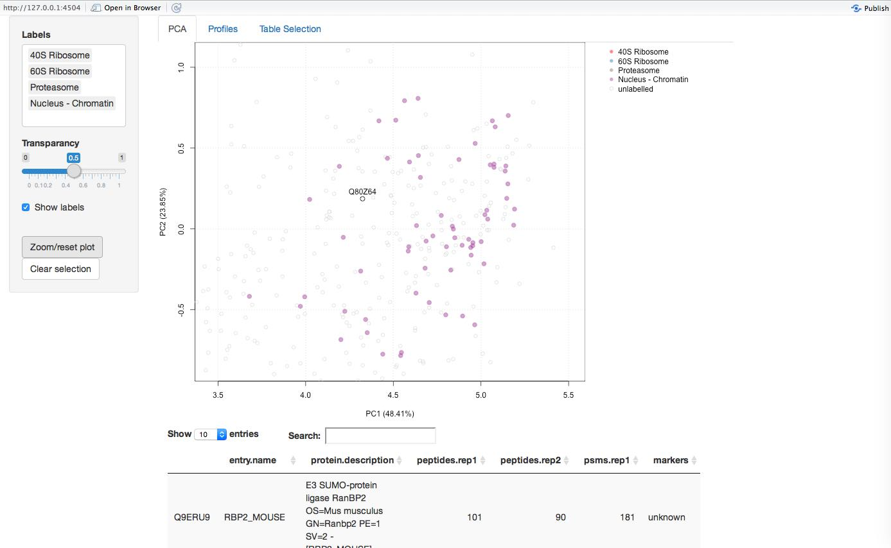
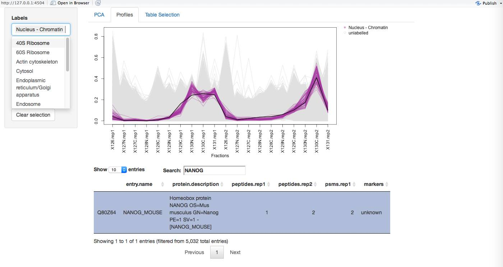
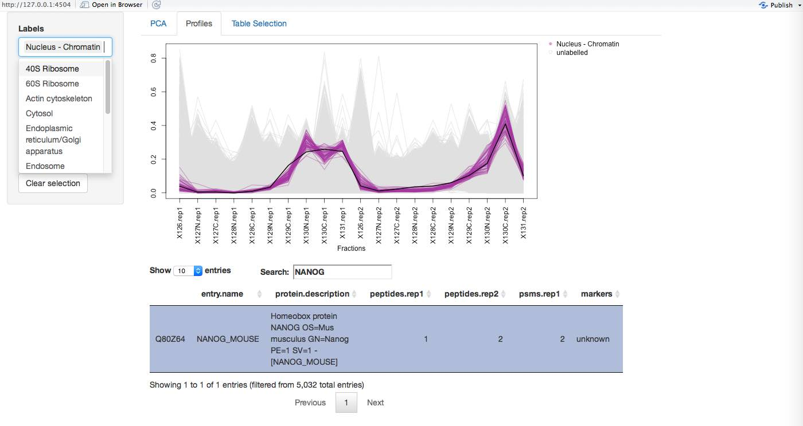
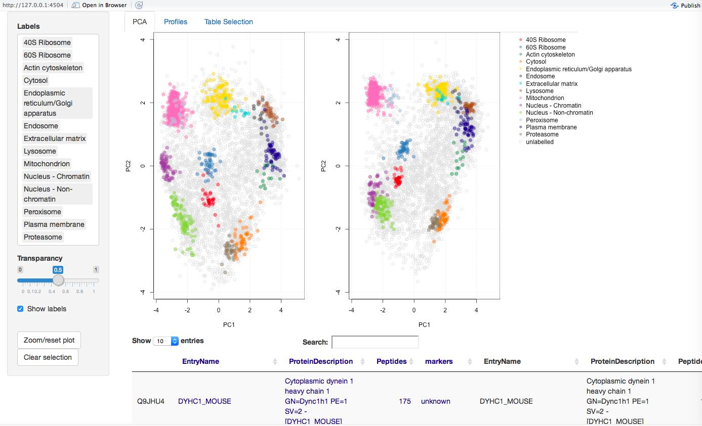
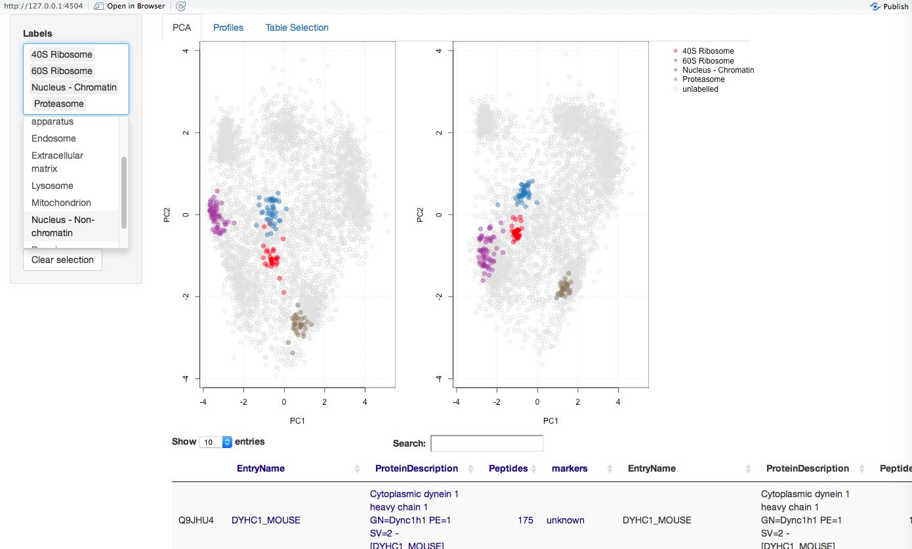
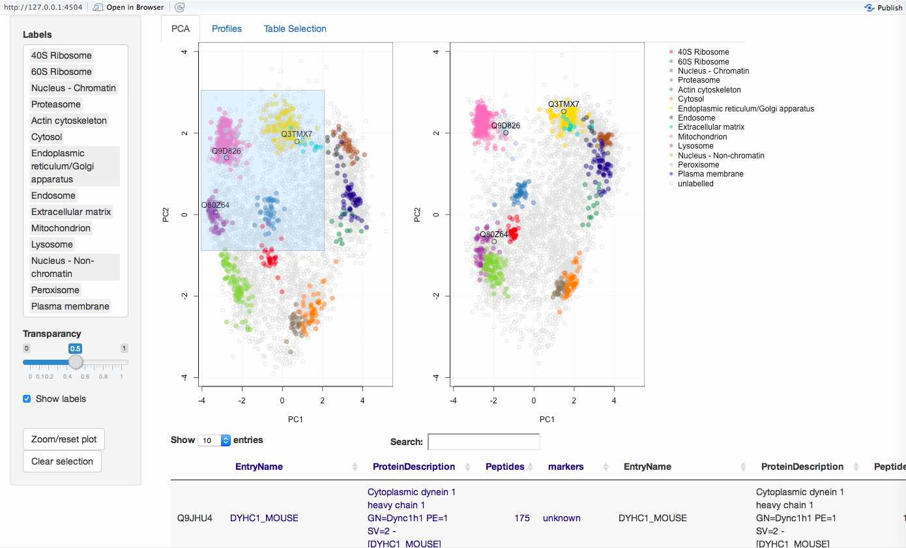
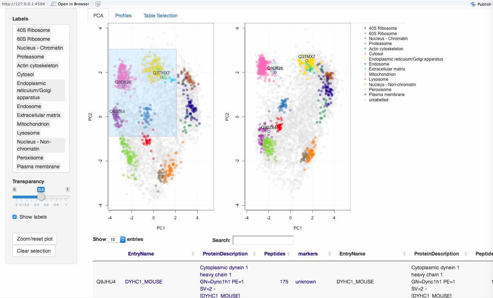

pRolocGUI - Interactive visualisation of spatial proteomics data
Lisa Breckels
Computational Proteomics Unit, Cambridge, UKThomas Naake
Laurent Gatto
Computational Proteomics Unit, Cambridge, UKpRolocGUI.RmdForeword
pRolocGUI is under active development; current functionality is evolving and new features will be added. This software is free and open-source. You are invited to open issues in the Github pRolocGUI repository in case you have any questions, suggestions or have found any bugs or typos. To reach a broader audience for more general questions about proteomics analyses using R consider of writing to the Bioconductor Support Forum.
Introduction
This vignette describes the implemented functionality of the pRolocGUI package. The package is based on the MSnSet class definitions of MSnbase and on the functions defined in the pRoloc package. pRolocGUI is intended for, but not limited to, the interactive visualisation and analysis of quantitative spatial proteomics data. To achieve reactivity and interactivity, pRolocGUI relies on the shiny framework. We recommend some familiarity with the MSnSet class (see ?MSnSet for details) and the pRoloc vignette (see vignette("pRoloc-tutorial")) before using pRolocGUI.
There are 3 applications distributed with pRolocGUI which are wrapped and launched by the pRolocVis function. These 3 applications are called according to the argument app in the pRolocVis function which may be one of “pca”, “classify” or “compare”.
- The
pcaapplication launches a Principal Components Analysis (PCA) plot of the data, with an alternate profiles tab for visualisation of protein profiles, it also features a searchable data table for the identification of proteins of interest. - The
classifyapplication has been designed to view machine learning classification results according to user-specified thresholds for the assignment of sub-cellular location. - The
compareapplication allows the comparison of two comparableMSnSetinstances, e.g. this might be of help for the analyses of changes in protein localisation in different conditions.
Getting started
Once R is started, the first step to enable functionality of the package is to load it, as shown in the code chunk below. We also load the pRolocdata data package, which contains quantitative proteomics datasets.
We begin by loading the dataset hyperLOPIT2015 from the pRolocdata data package. The data was produced from using the hyperLOPIT technology on mouse E14TG2a embryonic stem cells (Christoforou et al 2016). For more background spatial proteomics data anlayses please see Gatto et al 2010, Gatto et al 2014 and also the pRoloc tutorial vignette.
To load one of the applications using the pRolocVis function and view the data you are required to specify a minimum of one key argument, object, which is the data to display and must be of class MSnSet (or a MSnSetList of length 2 for the compare application). Please see vignette("pRoloc-tutorial") or vignette("MSnbase-io") for importing and loading data. The argument app tells the pRolocVis function what type of application to load. One can choose from: "pca" (default), "classify", "compare". The optional argument fcol (and fcol1 and fcol2 for the compare app) can be used which allows the user to specify the feature meta-data label(s) (fData column name(s)) to be plotted. The default is markers (i.e. the labelled data) for the PCA and compare For the classification app one must specify the prediction column i.e. the feature meta-data label that corresponds to the column containing the classification results, generated from running a supervised machine learning analysis (see below).
For example, to load the default pRolocVis application:
Launching any of the pRolocVis applications will open a new tab in a separate pop-up window, and then the application can be opened in your default Internet browser if desired, by clicking the ‘open in browser’ button in the top panel of the window.
To stop the applications from running press Esc or Ctrl-C in the console (or use the “STOP” button when using RStudio) and close the browser tab, where pRolocVis is running.
Which app should I use?
There are 3 different applications, each one designed to address a different specific user requirement.
- The PCA app is intended for exploratory data analysis, which features a clickable interface and zoomable PCA plot. If you would like to search for a particular protein or set of proteins this is the application to use. This app also features a protein profiles tab, designed for examining the patterns of user-specified sets of proteins. For example, if one has several overlapping sub-cellular clusters in their data, as highlighted by the PCA plot or otherwise, one can check for separation in all data dimensions by examining the protein profile patterns. Proteins that co-localise are known to exhibit similar distributions (De Duve’s principale).
- The classification app can be used for viewing the sub-cellular class predictions output from a supervised machine learning analysis and to help the user set a classification threshold (see the
pRoloctutorial for details on spatial proteomics data analysis). - The comparison application may be of interest if a user wishes to examine two replicate experiments, or two experiments from different conditions etc. Two PCA plots are loaded side-by-side and one can search and identify common proteins between the two data sets. As per the default application there is also a protein profiles tab to allow one to look at the patterns of protein profiles of interest in each dataset.
The pca application
The pca, default, application is characterised by an interactive and searchable Principal Components Analysis (PCA) plot. PCA is an ordinance method that can be used to transform a high-dimensional dataset into a smaller lower-dimenensional set of uncorrelated variables (principal components), such that the first principal component has the largest possible variance to account for as much variability in the data as possible. Each succeeding component in turn has the highest variance possible under the constraint that it be orthogonal to the preceding components. Thus, PCA is particularly useful for visualisation of multidimensional data in 2-dimensions, wherein all the proteins can be plotted on the same figure.
The application is subdivided in to three tabs: (1) PCA, (2) Profiles, and (3) Table Selection. A searchable data table containing the experimental feature meta-data is permanantly dispalyed at the bottom of the screen for ease. You can browse between the tabs by simply clicking on them at the top of the screen.
To run the pca application using pRolocVis:

The PCA Tab
Viewing The PCA tab is characterised by its main panel which shows a PCA plot for the selected MSnSet. By default a PCA plot is used to display the data and the first two principal components are plotted. The sidebar panel controls what features to highlight on the PCA plot. Under the ‘Labels’ menu, input can be selected by clicking on and off the data class names, or by typing and searching in the white input box. Selected items can then be deleted, by clicking on the name of the class and pressing the delete button on your keyboard. The PCA plot will then be updated accordingly. Below the select box is a ‘transparancy’ slider bar which controls the opacity of the highlighted data classes and two action buttons ‘Zoom/reset plot’ and ‘Clear selection’, which are described below.
Selecting sub-cellular classes
Searching Below the PCA plot is a searchable data table containing the fetaure meta data (fData). For LOPIT experiments, such as the one used in this example, this may contain protein accession numbers, protein entry names, protein description, the number of quantified peptides per protein, and columns containing sub-cellular localisation information. The data table is limited to displaying 12 columns of information, these are automatically selected from the fData to be the first 6 and last features. To select specific columns in the fData to display in the data table use the fdataInds argument, see ?pRolocVis for more details.One can search for proteins of interest by using the white search box, above the table to the right. Searching is done by partial pattern matching with table elements. Any matches or partial text matches that are found are highlighted in the data table. To select/unselect a protein of interest one can simply click/unclick on the corresponding entry in the table or double click directly on a protein of interest on the interactive PCA plot. If a protein(s) in the table is clicked and selected the row in the table will turn grey and the protein(s) will be highlighted on the PCA plot by a dark grey circle(s), if the ‘Show labels’ box is checked in the left sidebar panel the protein names for the selected protein(s) will also be shown on the PCA plot. Any selected proteins on the PCA plot or in the table can be cleared at any time by clicking the ‘Clear selection’ button on the left hand side panel.
Searching for proteins of interest
Zooming If a user wishes to examine a protein(s) in more detail, one can zoom in on specific points by hovering the mouse over the plot, then clicking and drawing a (square) brush and then clicking the ‘Zoom/reset button’ in the left side panel to zoom to the brushed area. This process can be repeated until the desired level of zoom is reached. The plot can be resetted to the original size by clicking the ‘Zoom/reset button’ once again.

Profiles By clicking the profiles tab at the top of the page a protein profiles plot is displayed that shows the quantitation data that is stored in the exprs data slot of the MSnSet. For the hyperLOPIT2015 dataset this is the relative abundances of each protein across the 20 fractions (2 x 10-plex replicates). As per the PCA tab, the profiles plot can also be updated according to the input selected in the sidebar panel on the left.
The profiles tab may be useful to specifically look for discrimination between (potentially overlappling) sub-cellular niches. It allows one to do this in an easy and direct manor where all proteins belonging to the same sub-cellular niche/data cluster (as specified by fcol) are loaded together. The protein distribution patterns can then be examined on a group vs group basis. Proteins of interest can be searched in the data table and once clicked, the distribution(s) of selected protein(s) are shown by black lines.
 

Features There is also functionality to use the FeaturesOfInterest/FoICollection infrastructure distributed by the MSnbase package (for examples on how to create FeaturesOfInterest see the pRoloc tutorial).

Table Selection
Table Selection The Table Selection tab provides an interface for data table column selection. Multiple columns can be selected on and off by clicking/unclicking the checkboxes that correspond to the columns in the data table.
Note: Other ordinance methods are available for displaying the data, for example, multidimensional scaling (MDS), and kernal-PCA, and t-SNE are all supported, and can be specified using the method argument when caling pRolocVis (this is not supported in the compare or classify application).
The classify application
Machine learning classification forms a large part of spatial proteomics data analysis. Protein localisation prediction can be cast as a supervised machine learning problem (learning from labelled instances), wherein one has a set of a few well-known examples (labelled data), that is sub-cellular protein markers (proteins that are known to belong to a set of finite sub-cellular niches), which can used to learn a classifier to associate unlabelled proteins to one of the sub-cellular classes that appear in the labelled training data.
In the example below, we use one of the classification algorithms from the pRoloc package; a Support Vector Machine (SVM) classifier, and train a model for protein localisation prediction of unassigned proteins in the hyperLOPIT2015 dataset. We first use the svmOptimisation function to find the best model parameters using the labelled training data found in fcol = "markers" and then apply these parameters using the svmClassification function. (Note, here we perform a reduced search using times = 3 in the interest of time. In practise we recommend at least to use times = 100 as described in the pRoloc tutorial.
This tutorial also contains more information on machine learning, the practise of training and testing, and some extensive examples of machine learning classification in spatial proteomics.)
opt <- svmOptimisation(object = hyperLOPIT2015,
fcol = "markers",
times = 3, verbose = FALSE)
res <- svmClassification(object = hyperLOPIT2015, assessRes = opt) By default, the classification function adds new feature variables containing the new sub-cellular assignments made by the SVM classifier and the associated assignment probabilities, called scores, to the featureData slot of the MSnSet, in this case, they are labelled svm and svm.scores, and can be accessed using the fData accessor method, e.g. fData(res)$svm or fData(res)$svm.scores.
It is common when applying a supervised classification algorithm, wherein the whole class diversity is not present in the training data, to set a specific score cutoff on which to define new assignments, below which classifications are set to unknown/unassigned. Deciding on a threshold is not trivial as classifier scores are heavily dependent upon the classifier used and different sub-cellular niches can exhibit different score distributions. To help examine these distributions and set a threshold one can use the classify app.
To launch the classify application:

The classification application, setting a “quantile” cutoff score
The data is loaded and displayed on a PCA plot and a boxplot is used to display the classifier scores by data class. On the left there is a sidebar panel with sliders to control the thresholds upon which classifications are made. There are two types of cut-off that the user can choose from: (1) “Quantile” and (2) “User-defined”. By default, when the application is launched quatile scoring is selected and set to 0.5, the median. The class-specific score thresholds that correspond to selecting the desired quantile are shown on as red dots on the boxplot. The assignments on the PCA plot are also updated according to the selected threshold. The quantile threshold can be set by moving the corresponding quantile slider. If one wished to set their own cut-offs the “User-defined” radio button must be selected and then the sliders for defining user-specified scores become active and the scores and highlighted on the boxplot by blue dots.

The classification application, setting a “user-defined” cutoff score
By default, when user-specified scores are selected all sliders are set to 1 and can be changed by moving the sliders to the desired score. Once the desired score has been found the application can be closed and the class-specific scores are displayed in the R console. These scores can be used to get protein localisation predictions using the getPredictions function, as demonstrated below:
mythreshold <- pRolocVis(object = res, app = "classify", fcol = "svm")
res <- getPredictions(res, fcol = "svm",
mcol = "markers", t = mythreshold)The classification app can also be used as an intercative version of the function orgQuants in the pRoloc package.
The compare application
The comparison application may be of interest if a user wishes to examine two replicate experiments, or two experiments from different conditions etc. Two PCA plots are loaded side-by-side and one can search and identify common proteins between the two data sets.
A MSnSetList of length 2 must be supplied as input, containing the two datasets one wishes to compare. In the example below we load two replicate datasets of mouse embryonic stem cells produced using the hyperLOPIT technology.
data(hyperLOPIT2015ms3r1)
data(hyperLOPIT2015ms3r2)
mydata <- MSnSetList(list(hyperLOPIT2015ms3r1, hyperLOPIT2015ms3r2))
pRolocVis(mydata, app = "compare") 
Viewing, remapping, searching and zooming The compare app has the same functionality as the pca application and PCA, Profiles and Table Selection tabs. One key feature of the compare application is the ability to re-map the second dataset onto the PCA data space of the first (reference) data set (see ?pRolocVis and the argument remap = TRUE).
Currently, only PCA is supported and re-mapping is done by default. This can be switched off with the remap argument. Using the first dataset as the reference set, PCA is carried out on the first dataset and the standard deviations of the principal components (i.e. the square roots of the eigenvalues of the covariance/correlation matrix) and the matrix of variable loadings (i.e. a matrix whose columns contain the eigenvectors) are stored and then used to calculate the principal components of the second dataset. Both datasets are scaled and centered in the usual way. The first dataset appears on the left, and the second re-mapped data appears on the right. The order of the first (the reference data for remapping) and second dataset can be changed through regeneration/re-ordering of the MSnSetList object. Note: the proteins that are common in both datasets are only displayed.
As per the pca application, and described in detail above, there is a sidebar with a ‘Labels’ menu, where input can be selected by clicking on and off the data class names. Proteins of interest can be highlighted by double clicking on any of the PCA plots (and highlighted in both datasets on both PCA plots), or by typing and searching in the white input box above the data table and clicking on the protein of interest in the data table. Zooming, clicking and searching for proteins of interest is supported as per the pca app.
 

Profiles As per the pca application there is a profiles tab which loads the quantitative protein profiles for the first experiment and second experiment, on the left- and right-hand sides respectively. One can highlight proteins of interest by clicking items in the data table, and selecting classes to display in the side panel under the ‘Labels’ menu.

The compare application, profiles
Table Selection By default 4 columns containing the feature data the first dataset (dark blue) and 4 columns for the second dataset (black) will be displayed in the table, and users can select particular columns they wish to display in the Table Selection tab.
The compare application, table selection
References
Gatto L., Vizcaíno J.A., Hermjakob H., Huber W. and Lilley K.S. Organelle proteomics experimental designs and analysis Proteomics, 10:22, 3957-3969, 2010.
Gatto L., Breckels L.M., Burger T., Nightingale D., Groen A.J., Campbell C., Nikolovski N., Mulvey C.M., Christoforou A., Ferro M., Lilley K.S. A foundation for reliable spatial proteomics data analysis, Mol Cell Proteomics. 2014 Aug;13(8):1937-52.
Christoforou A., Mulvey C.M., Breckels L.M., Hayward P.C., Geladaki E., Hurrell T., et al. A draft map of the mouse pluripotent stem cell spatial proteome. Nat Commun. 2016 Jan 12;7:9992.